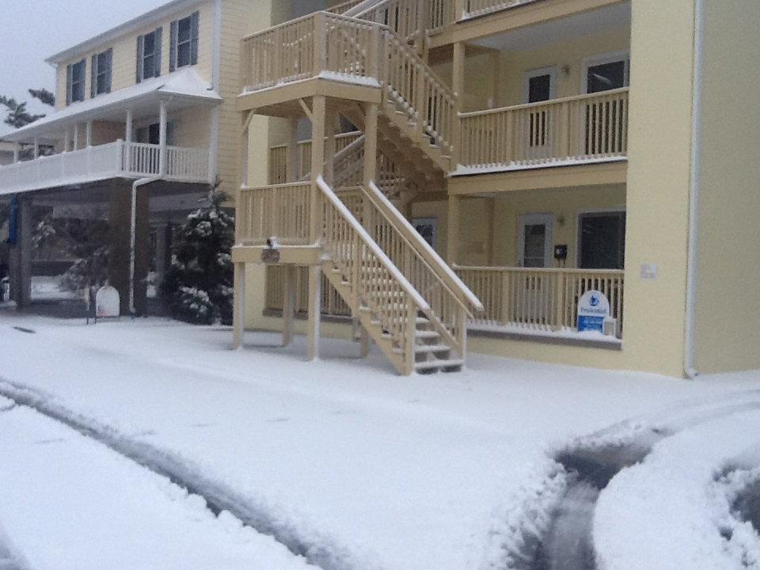

Oceanside 42 Unit 3W


HELLO NEW TEAM MEMBER: DAWN L SNARSKI!!
OCEANSIDE 42 IS CONVIENTLEY LOCATED IN MIDTOWN - 1/2 BLOCK FROM THE BEACH AND THE OCEAN CITY CONVENTION CENTER. THIS TOP LEVEL CONDO CONSISTS OF NON-CENTRAL AIR CONDITIONING, 3 BEDROOMS, 2 FULL BATHROOMS, COMPLETE KITCHEN WITH ALL THE AMENITIES, LIVING ROOM AND FULL SIZE WASHER AND DRYER. WITH 1100 SQ. FEET OF LIVING SPACE THE UNIT SLEEPS 8/9 ADULTS.THEMASTER BEDROOM # 1 IS PAINTED LIGHT BLUE, HAS A QUEEN BED, CEILING FAN, SPACIOUS CLOSET, 5 DRAWER DRESSER, LARGE LED FLAT SCREEN TV WITH CABLE, AND FULL SIZE BATHROOM.BEDROOM # 2 IS PAINTED LIGHT GREEN, HAS A QUEEN BED, CEILING FAN, MEDIUM SIZE FLAT SCREEN LED TV, A SMALL DRESSER AND A SPACIOUS CLOSET. BEDROOM # 3 IS PAINTED LIGHT YELLOW, HAS A SET OF SINGLE BUNK BEDS, A SINGLE DAY BED, A LARGE LED FLAT SCREEN TV W CABLE, A SPACIOUS CLOSET WHICH INCLUDES A LARGE DRESSER. THE LIVING ROOM HAS TWO LARGE LOUNGE CHAIRS, AN OTTOMAN, A NEW PULL OUT QUEEN SOFA BED, LARGE LED FLAT SCREEN TV WITH CABLE AND MULTIPLE CEILING FANS. THE KITCHENHAS A FULL SIZE REFRIGERATOR/FREEZER, FULL SIZE OVEN/STOVE, MICROWAVE, DISHWASHER, UNDERCABINET RADIO CD / MP3 PLAYER, A TABLE THAT WILL SEAT UP TO 4 AND THERE ARE 3 UNDER COUNTER BAR STOOLS. THE FRONT PORCH HAS AN OUTDOOR STORAGE CLOSET FOR BEACH ITEMS AND A NEW TABLE/CHAIR SET. ALL THIS PLUS AN OUTDOOR RINSE AREA AND 2ASSIGNED PARKING SPACES.